A collection of live demos showing how the timeline handles everything from real-time data streams to image export. All interactive, all running in the browser.
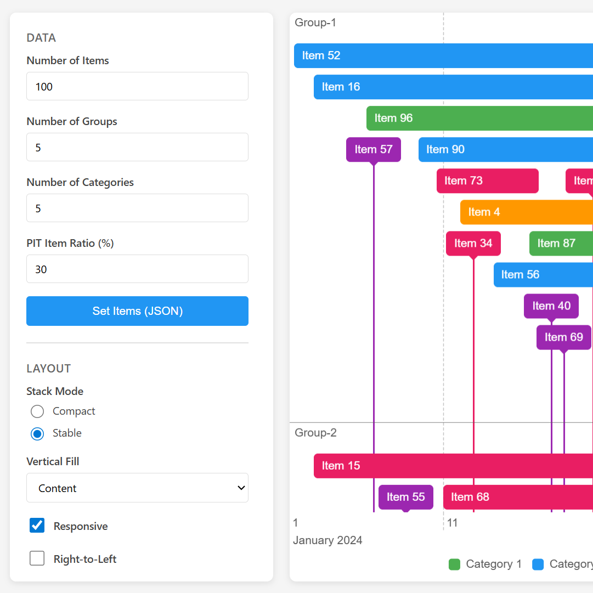
Interactive testing environment with controls for all timeline options.
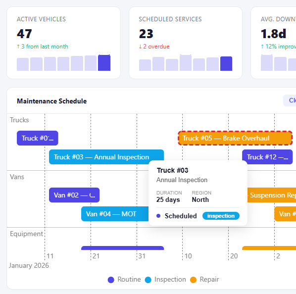
Material-style dashboard with KPI cards, charts, timeline-driven detail form, and region filtering.
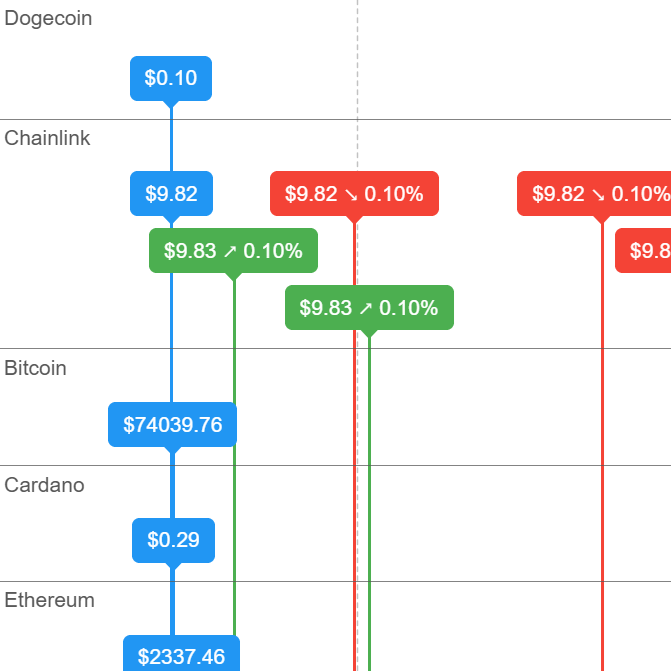
Live cryptocurrency prices via WebSocket with color-coded movements.
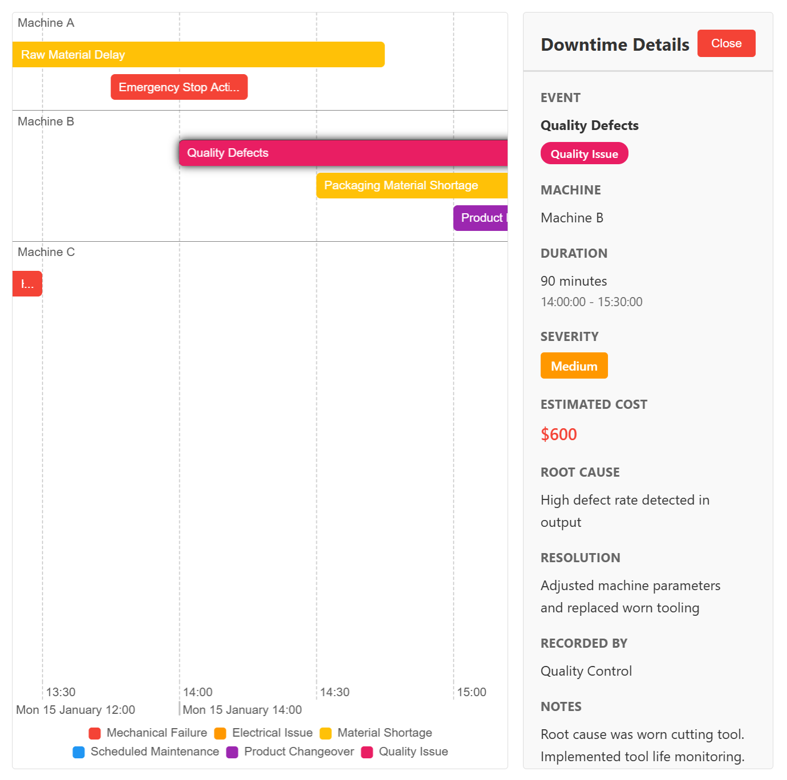
Downtime tracking with selection-driven detail panels.
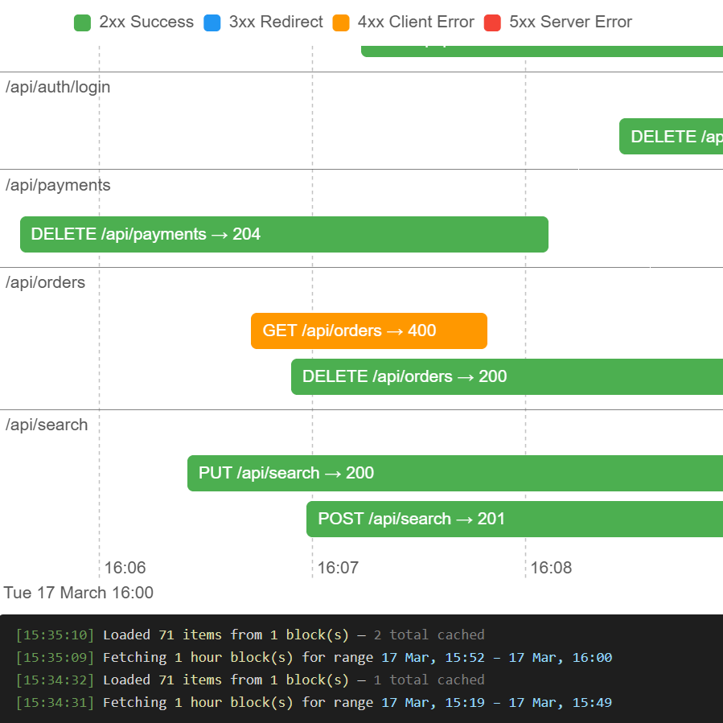
Server logs loaded on demand as you pan the timeline.
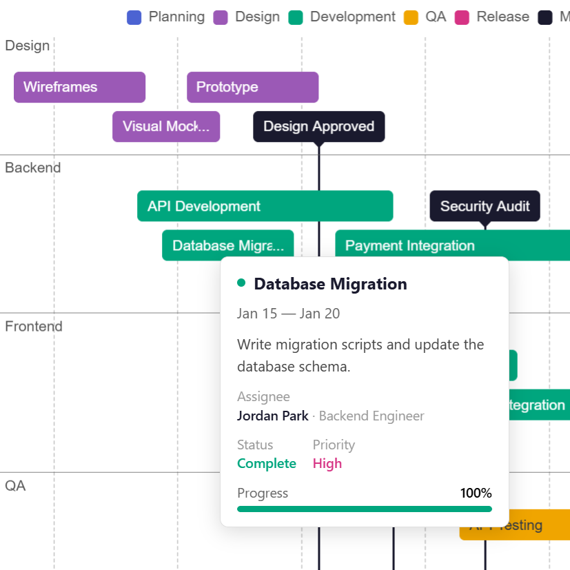
Rich tooltip cards with assignee details, status, and progress.
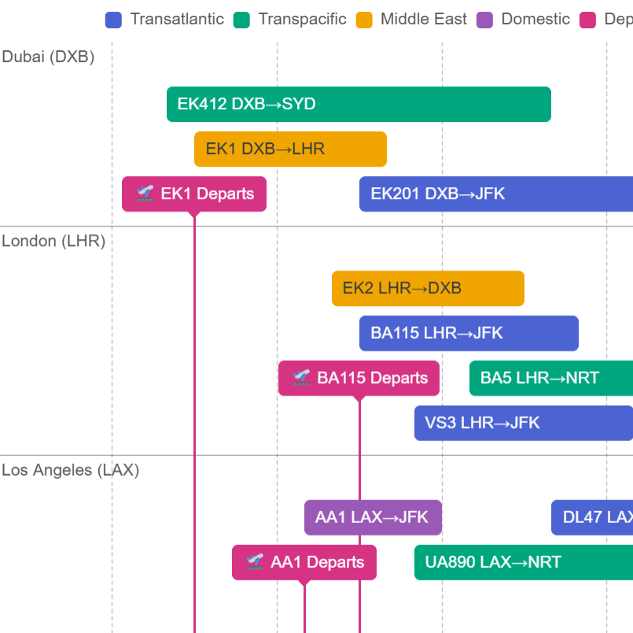
Flight schedule with a Luxon date adapter. Switch timezones live.
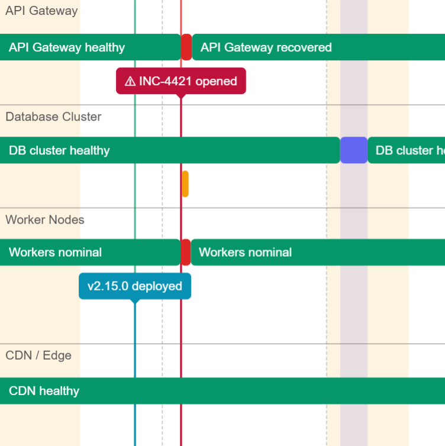
Kubernetes overview with bands for maintenance and incidents.
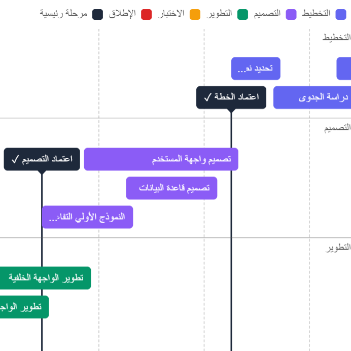
Arabic project schedule with full right-to-left layout support.
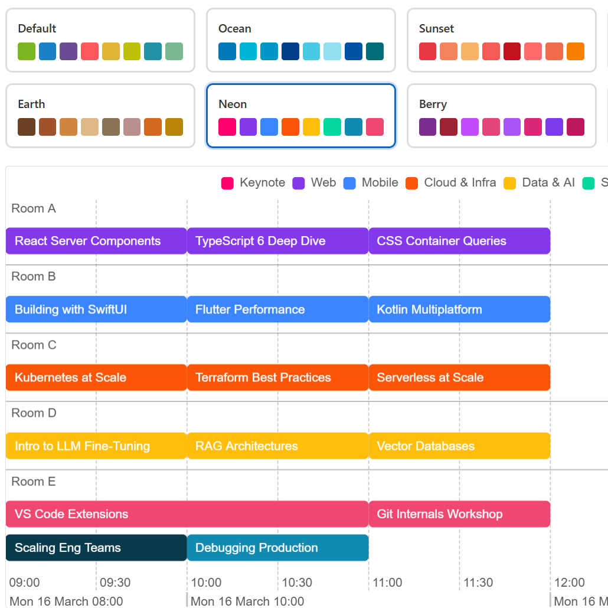
Switch palettes and watch the timeline update instantly.
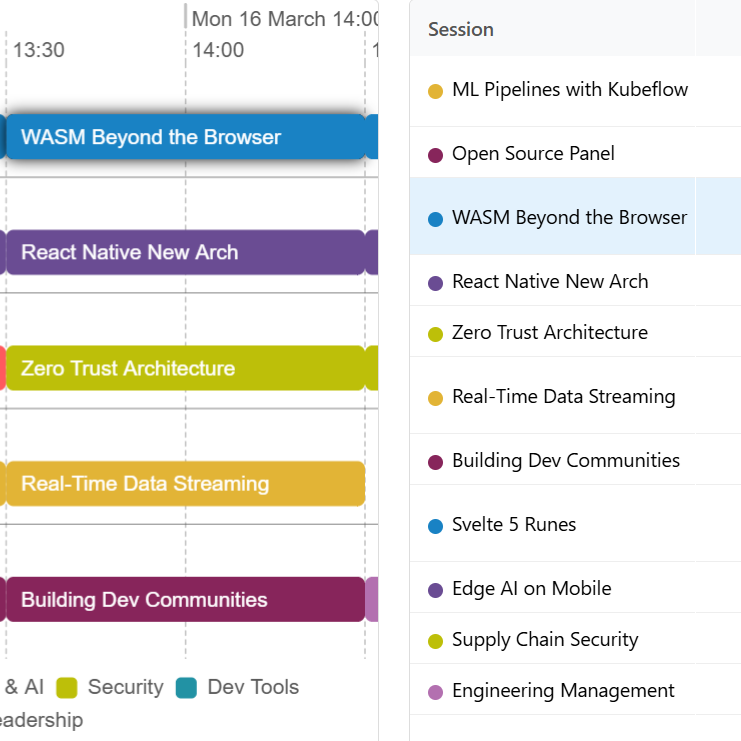
Select items from a table and focus them on the timeline.
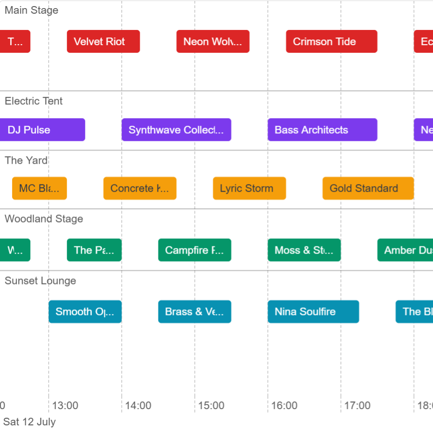
Download the timeline as PNG, JPEG, or WebP with DPR control.
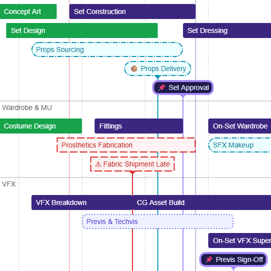
Unique visual treatment per item — borders, colours, radius.
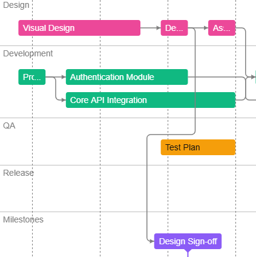
Mobile app launch schedule with dependency arrows across planning, design, dev, QA, and release.
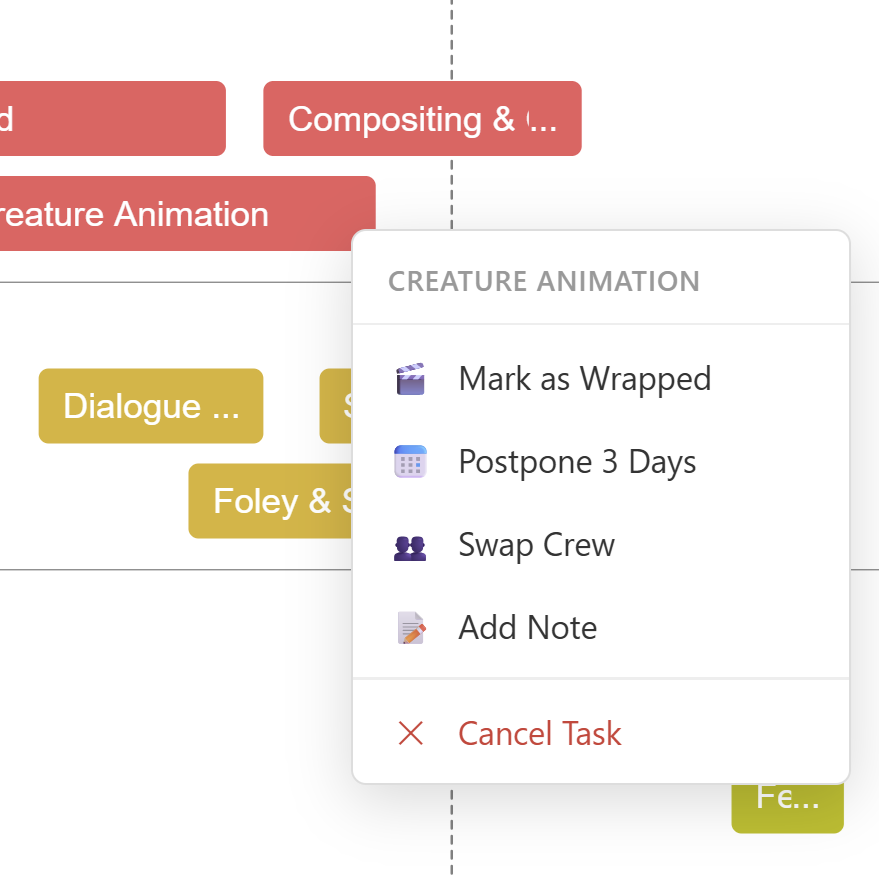
Film production schedule — right-click to manage tasks with contextual actions.
Sprint tracker with progress fill bars showing task completion inside items.
Engineering roadmap with collapsible swimlanes. Click headers or use buttons.